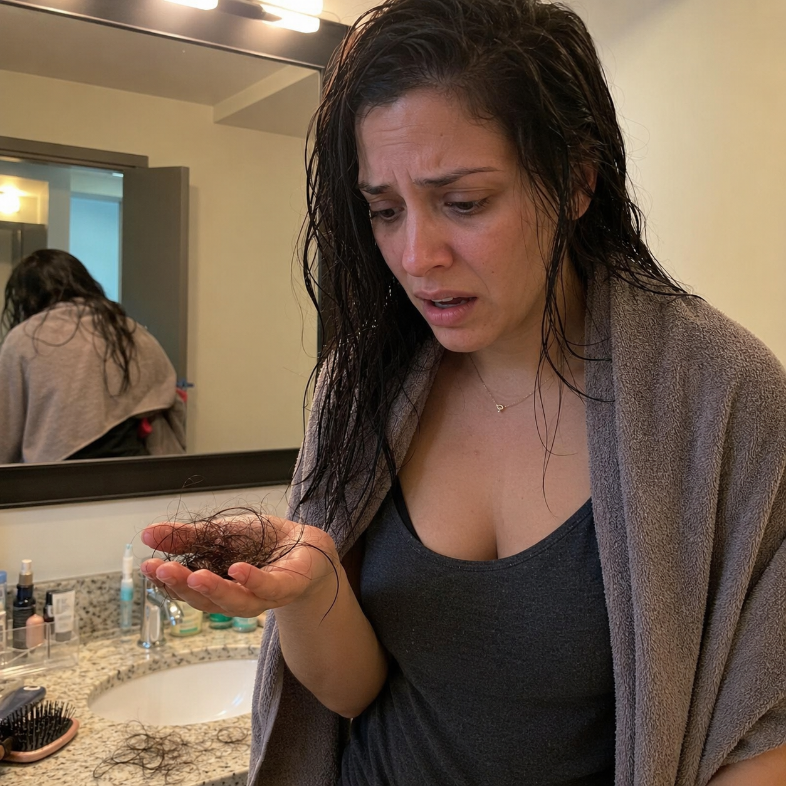
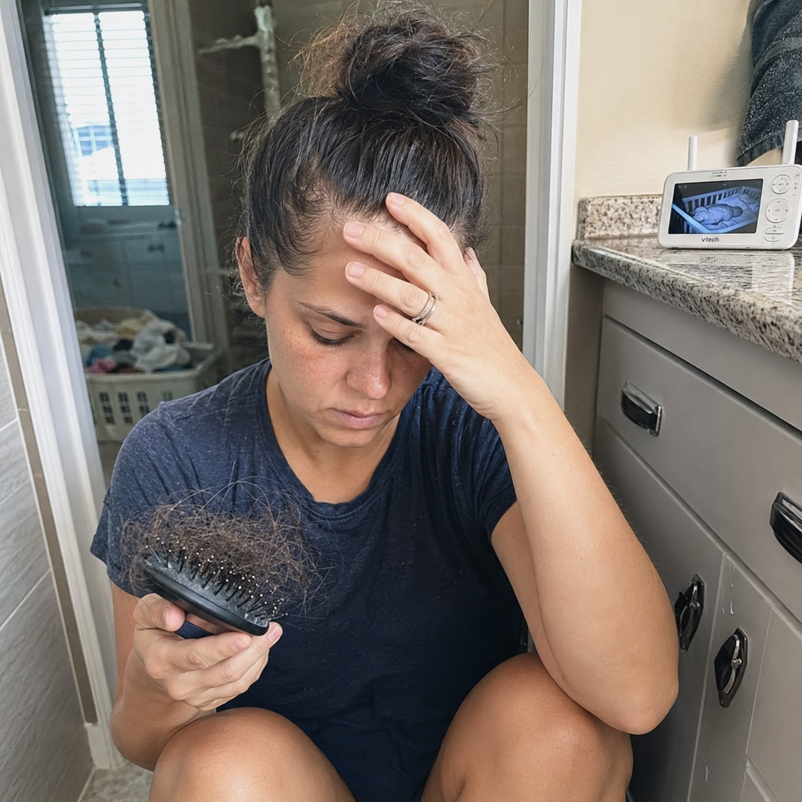
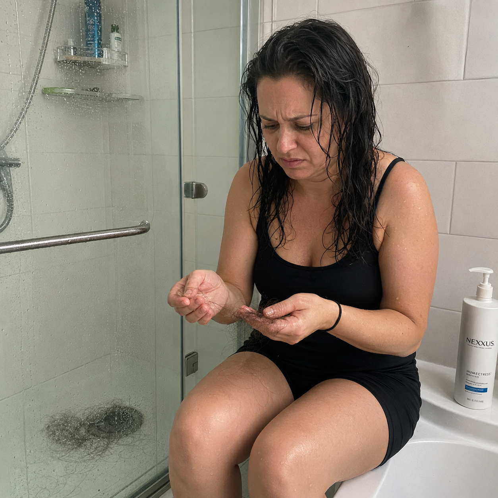
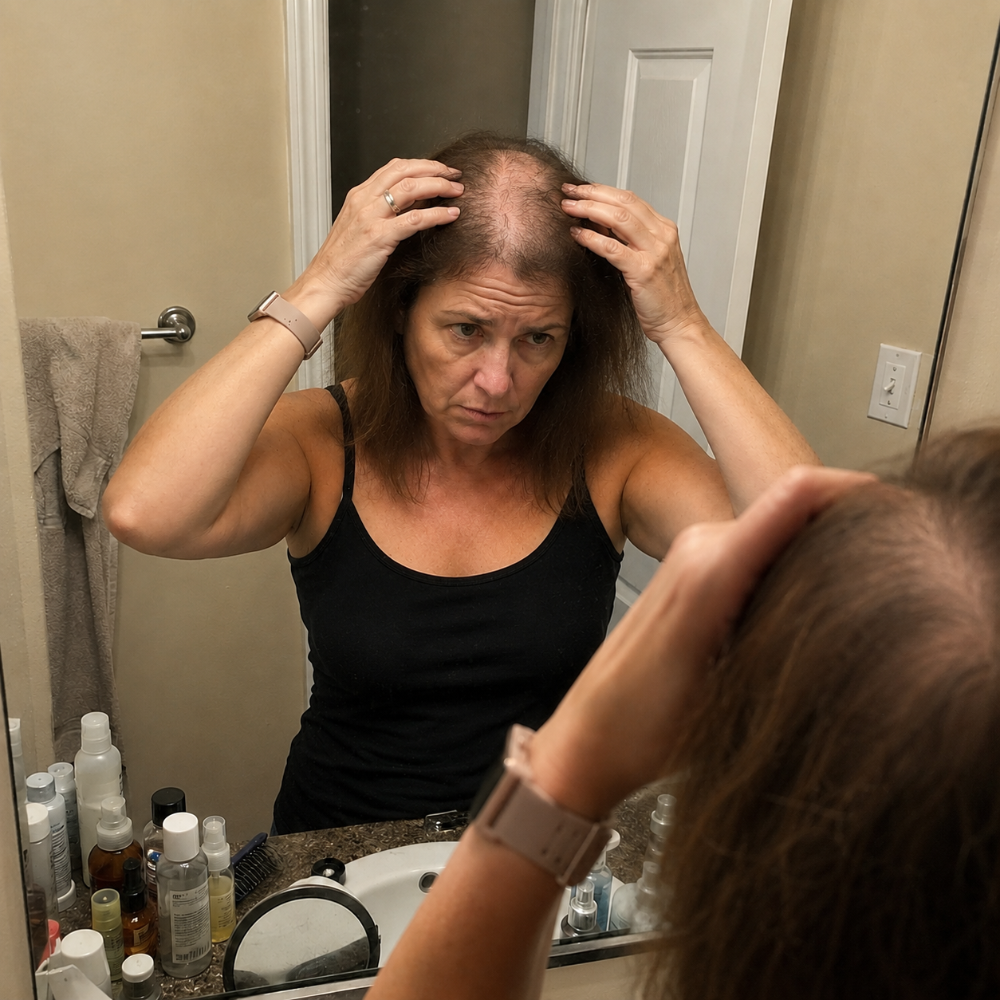
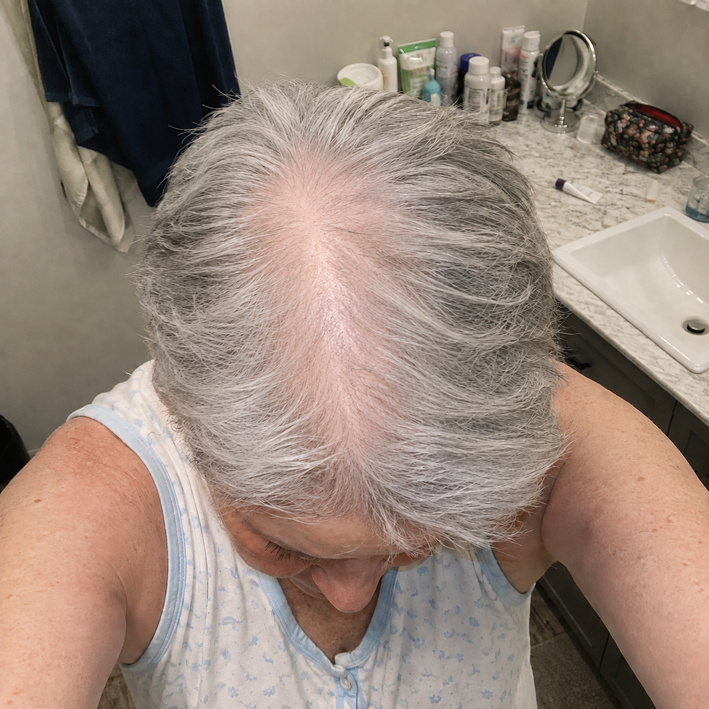
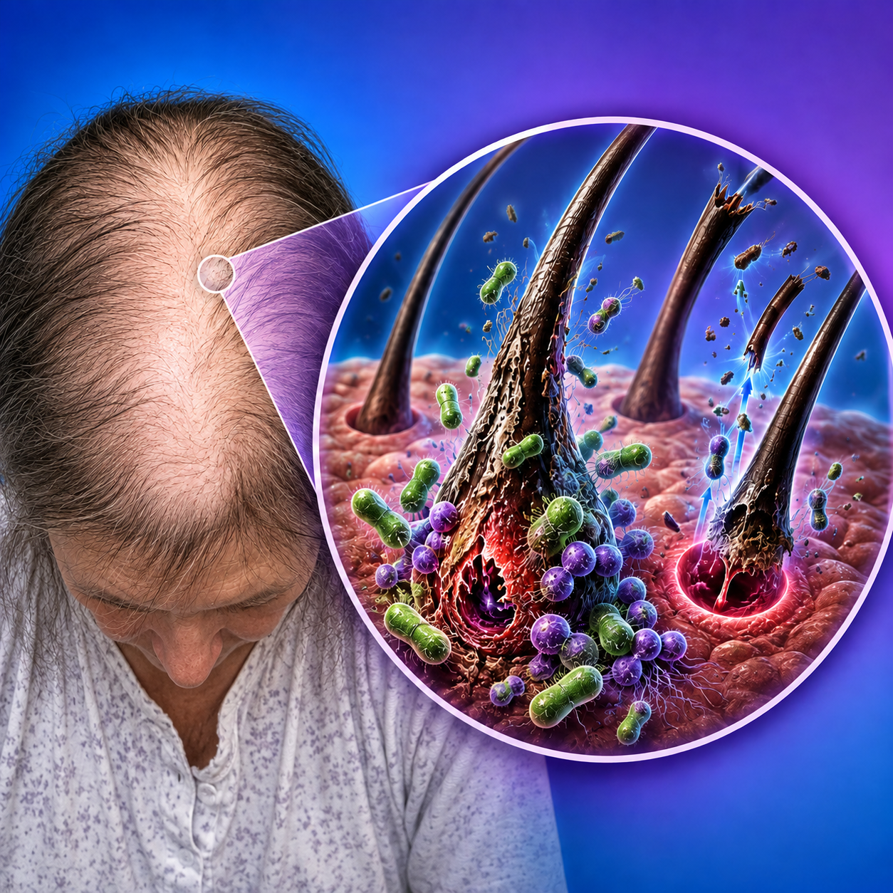
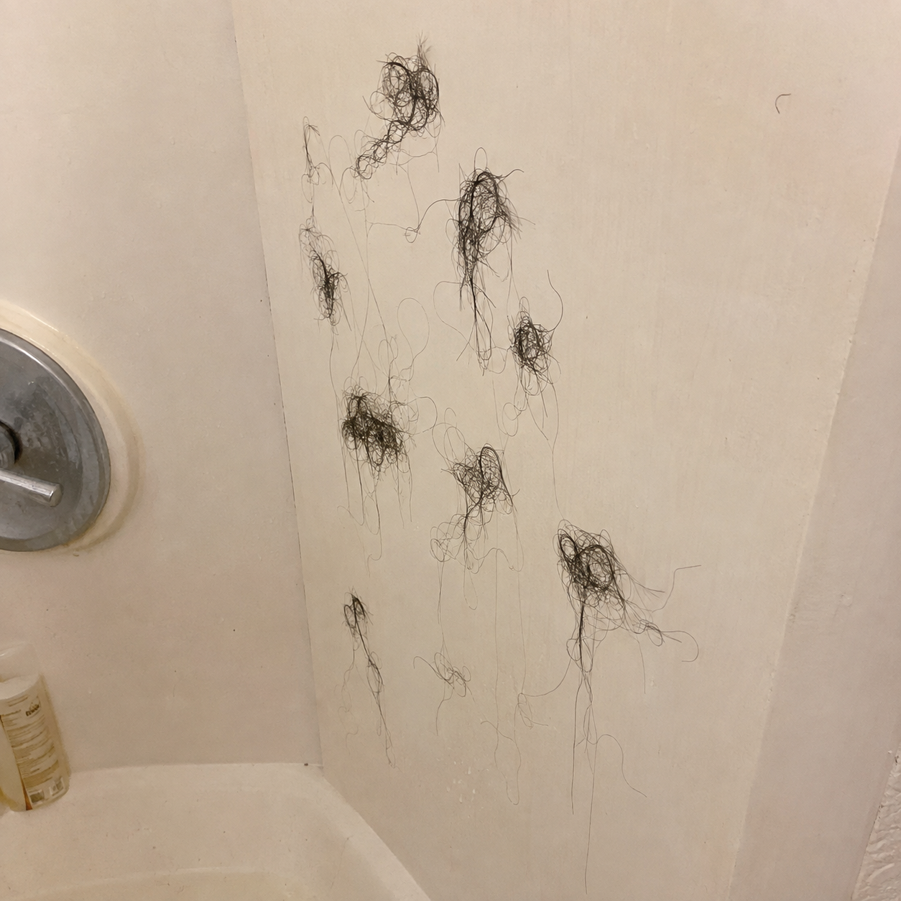
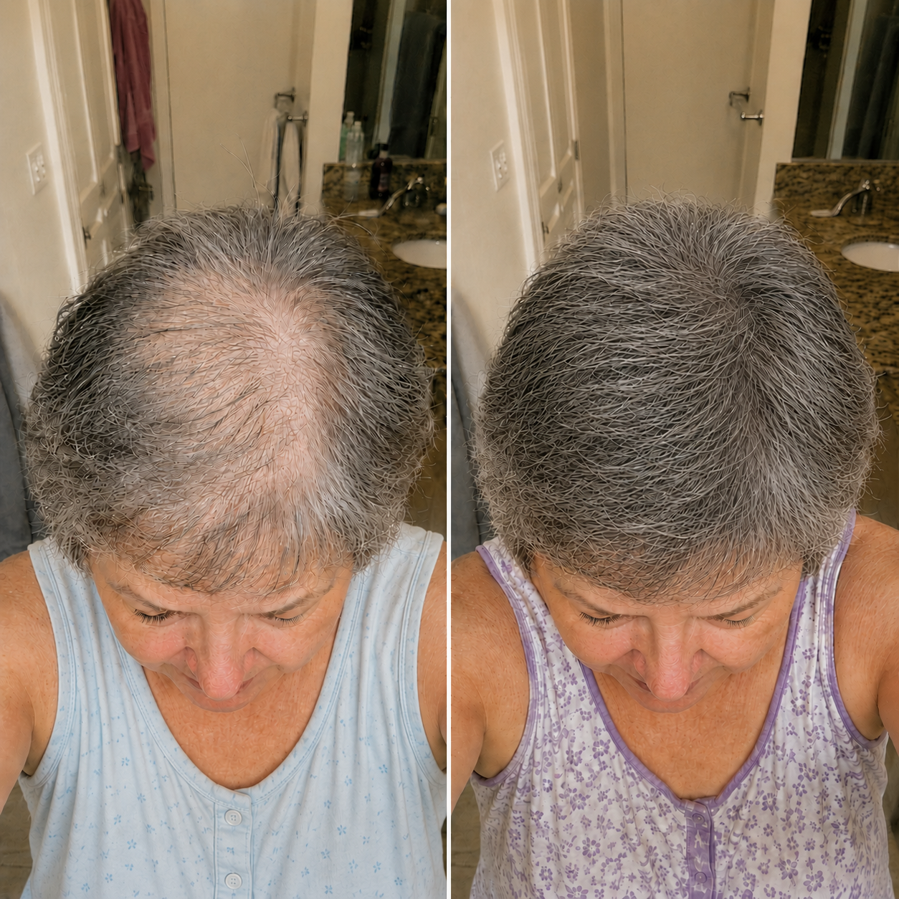

If your hair started falling out in clumps after GLP-1, do this every morning if you don't want to go bald.
I'm Nina, 29. Within three weeks of stopping GLP-1, entire strands came out between my fingers. My dermatologist said "Telogen effluvium. Use minoxidil and be patient." I tried minoxidil, rosemary oil, biotin. Nothing.
At 2am I found a video about a "Morning Anti-Fall Ritual." A hormone attacks the follicles and spikes after sudden hormonal changes — menopause, postpartum, and stopping GLP-1. Everything I'd tried was treating the symptom, not the cause.
On day 9 I felt short hairs poking through. Today, 7 weeks in, my hair is fuller than it's been in 3 years.
Tap here while it's still available.
Se seu cabelo começou a cair em tufos depois do GLP-1, faça isso todas as manhãs se não quiser ficar careca.
Sou a Nina, 29 anos. Em três semanas parando o GLP-1, saíam mechas inteiras entre os dedos. A dermatologista disse "Eflúvio telógeno. Use minoxidil e tenha paciência." Tentei minoxidil, óleo de alecrim, biotina. Nada.
Às 2h da manhã achei um vídeo sobre um "Ritual Matinal Anti-Queda". Existe um hormônio que ataca os folículos depois de mudanças hormonais bruscas — menopausa, pós-parto e interrupção de GLP-1. Tudo que eu tentava tratava o sintoma, não a causa.
No dia 9 senti fios curtos nascendo. Hoje, 7 semanas depois, meu cabelo está mais cheio do que em 3 anos.
Toque aqui enquanto ainda está disponível.

If you're going bald after giving birth, do this Morning Anti-Fall Ritual for 30 days before it's too late…
I'm Jess, 31. Four months postpartum, pulling my hair back and seeing my scalp where there used to be a full head of hair. Prenatal vitamins, biotin gummies, a $45 shampoo — nothing worked.
A mom in a Facebook group shared an article: postpartum hormonal changes don't kill the follicles, they just put them to sleep. She started a Morning Anti-Fall Ritual and saw new hairs in under three weeks.
By the third week I felt short hairs poking through my hairline. It's been 6 weeks now — my hairline is filling back in.
I'm leaving the article right here. Read it while it's still available.
Se você está ficando careca depois do parto, faça esse Ritual Matinal Anti-Queda por 30 dias antes que seja tarde…
Eu sou a Jess, 31 anos. Quatro meses após o parto, puxando o cabelo pra trás e vendo o couro cabeludo onde antes havia uma cabeleira farta. Vitaminas pré-natais, gomas de biotina, um xampu de 45 dólares — nada funcionou.
Uma mãe num grupo do Facebook compartilhou um artigo: as mudanças hormonais do pós-parto não matam os folículos, só os colocam pra dormir. Ela começou o Ritual Matinal Anti-Queda e viu fios novos em menos de três semanas.
Na terceira semana senti fios curtinhos na linha do cabelo. Já se passaram 6 semanas — minha linha do cabelo está preenchendo de novo.
Vou deixar o artigo aqui. Leia enquanto ainda está disponível.

If your hair is falling out and your doctor keeps insisting your labs are "normal," read this.
I'm Megan, 37. My doctor ordered bloodwork — "within normal range." Told me to take biotin and relax. But there was a third marker, one no doctor ever checked against hair loss: the hair killing hormone.
It explained my oily scalp, the inflammation, why topical products never worked. I found an article with a step-by-step Morning Anti-Fall Ritual that stops that hormone from attacking the root.
Shedding slowed within weeks. By week six, new hairs along my hairline for the first time in over a year.
Tap below while the content is still available.
Se seu cabelo está caindo e seu médico insiste em dizer que seus exames estão "normais", leia isso.
Eu sou a Megan, 37 anos. Meu médico pediu exames — "dentro da normalidade". Disse pra eu tomar biotina e relaxar. Mas tinha um terceiro indicador que nenhum médico jamais checou com a queda de cabelo: o hair killing hormone.
Isso explicava meu couro cabeludo oleoso, a inflamação, por que produtos tópicos nunca funcionavam. Achei um artigo com o passo a passo do Ritual Matinal Anti-Queda que interrompe esse hormônio na raiz.
A queda diminuiu em semanas. Na sexta semana, fios novos nascendo na linha do cabelo pela primeira vez em mais de um ano.
Toque abaixo enquanto o conteúdo ainda está disponível.

This ritual was silenced after they started revealing the real root cause of hair loss after 40.
I'm Susan, 53. Menopause at 49 — hot flashes, insomnia, I expected all that. Losing my hair, I didn't. A dermatologist said "androgenetic alopecia, normal during menopause, use minoxidil." 5 months, dry scalp, thinner strands.
Everything I tried worked on the strand. Nothing touched the follicle, where the hair killing hormone (from testosterone) sends the signal to shrink.
My sister sent me an article about the Morning Anti-Fall Ritual — the opposite of everything I'd done. By week two, fewer strands. By week four, tiny hairs poking through.
Today it's been 2 months. The part closed up. The crown filled in.
Esse ritual foi silenciado depois que começaram a divulgar a verdadeira causa raiz da queda capilar depois dos 40.
Sou a Susan, 53 anos. Menopausa aos 49 — ondas de calor, insônia, tudo isso eu esperava. Perder o cabelo, não. Uma dermatologista disse "alopecia androgenética, normal na menopausa, use minoxidil." 5 meses, couro ressecado, fios cada vez mais finos.
Tudo que eu tentava agia no fio. Nada tocava o folículo, onde o hair killing hormone (vindo da testosterona) manda o sinal de encolher.
Minha irmã me mandou um artigo sobre o Ritual Matinal Anti-Queda — o oposto de tudo que eu tinha feito. Na segunda semana, menos fios. Na quarta, fiozinhos nascendo.
Hoje faz 2 meses. A risca fechou. A coroa preencheu.

I used minoxidil for eight months. Yes, I saw some hair grow. And the second I stopped, it started falling out again.
My sister sent me an article about the "Anti-Shed Morning Ritual." I laughed at her. But I read it, because I was desperate. Minoxidil doesn't address the real reason women lose hair after menopause and postpartum. The ritual does the opposite — it helps address the hormone that weakens follicles.
By the third day, fewer hairs on my pillow. A few weeks later, the bald spots were completely filled in. I never went back to minoxidil.
Read the article before it's gone. They keep taking it down, for obvious reasons.
Eu usei minoxidil por oito meses. Sim, vi alguns fios crescerem. E no segundo em que parei, começaram a cair de novo.
Minha irmã me mandou um artigo sobre o "Ritual Matinal Anti-Queda". Eu ri da cara dela. Mas li, porque estava desesperada. O minoxidil não combate o real motivo da queda depois da menopausa e do pós-parto. O ritual faz o oposto — ajuda a combater o hormônio que enfraquece os folículos.
No terceiro dia, menos fios no travesseiro. Semanas depois, as falhas preenchidas. Nunca mais voltei pro minoxidil.
Leia o artigo antes que ele saia do ar. Eles continuam tirando, por motivos óbvios.

Warning, the hair-killing hormone is thinning your hair and making it fall out at this very moment.
Around 45, estrogen crashes — and DHT, the hair-killing hormone, moves in. Think of it like crabgrass: it wraps around the root, cuts off blood and nutrients. Your hair isn't "thinning with age," it's being choked from below.
Hair vitamins can't block DHT. Neither can anti-hair-loss shampoo or minoxidil. Only the Anti-Shed Morning Ritual is scientifically proven to combat it at the root cause.
There's an article that explains exactly how to make it, in the correct order. Click and read it while DHT still hasn't had time to ruin your hair.
Atenção, o hormônio assassino de cabelo está afinando o seu cabelo e fazendo ele cair neste exato momento.
Por volta dos 45, o estrogênio despenca — e o DHT, o hormônio assassino de cabelo, entra no lugar. Pense nele como mato invasor: se enrola na raiz, corta sangue e nutrientes. Seu cabelo não está "afinando com a idade", está sendo sufocado por baixo.
Vitaminas capilares não bloqueiam o DHT. Nem shampoo antiqueda, nem minoxidil. Só o Ritual Matinal Anti-Queda é cientificamente comprovado pra combater na causa raiz.
Existe um artigo que explica exatamente como fazer, na ordem correta. Clique e leia enquanto o DHT ainda não teve tempo de destruir seu cabelo.

No, it is not normal for your hair to fall out in the shower. Sorry to give you the bad news, but you are simply losing more and more hair.
If your bathroom wall gets covered in hair, your brush has enough for a wig — that's the hair-killing hormone acting inside your body. Hair vitamins are Band-Aids. Shampoos don't solve it. Minoxidil only masks it.
The Anti-Shed Morning Ritual is the one thing that blocks it. Day 7, fewer strands on the floor. Day 14, clean bathroom wall. Day 27, my sister said my hair had grown so much.
You can click "Learn More" and read it, or let the hormone keep attacking until it turns into visible bald spots.
Não, não é normal o seu cabelo cair no banho. Desculpa te dar a má notícia, mas você está simplesmente perdendo cada vez mais cabelo.
Se a parede do banheiro fica coberta de fios, sua escova tem cabelo suficiente pra uma peruca — isso é o hormônio assassino de cabelo agindo no seu corpo. Vitaminas capilares são curativos. Shampoos não resolvem. Minoxidil só mascara.
O Ritual Matinal Anti-Queda é a única coisa que bloqueia. Dia 7, menos fios no chão. Dia 14, parede do banheiro limpa. Dia 27, minha irmã disse que meu cabelo tinha crescido muito.
Você pode clicar em "Saiba Mais" e ler, ou deixar o hormônio continuar atacando até virar falhas visíveis.

Whatever you do, these are the 3 things you should do to stop your hair from falling out and thinning even after menopause. The third one is the most important.
At 62, after menopause, my hair started falling like crazy. "It's just menopause," they said. "Use minoxidil" — but that lowers blood pressure and can cause tachycardia. Out of the question.
1) Keeping my hair dirty (harsh shampoos strip natural oils). 2) Stop using anti-hair-loss shampoo (saved me hundreds of dollars, doesn't reach the follicle anyway). 3) The Anti-Shed Morning Ritual, every day.
After 34 days, my husband asked if I was wearing a wig. Even my daughter, going through postpartum hair loss, tried it and it worked.
Faça o que fizer, essas são as 3 coisas que você deveria fazer pra parar a queda e o afinamento do cabelo mesmo depois da menopausa. A terceira é a mais importante.
Aos 62, depois da menopausa, meu cabelo começou a cair como nunca. "É só a menopausa," diziam. "Usa minoxidil" — mas isso abaixa a pressão e pode causar taquicardia. Fora de cogitação.
1) Manter o cabelo sujo (shampoos agressivos removem os óleos naturais). 2) Parar de usar shampoo antiqueda (economizei centenas de dólares, não chega no folículo mesmo assim). 3) O Ritual Matinal Anti-Queda, todo dia.
Depois de 34 dias, meu marido perguntou se eu estava usando peruca. Até minha filha, passando por queda pós-parto, testou e funcionou.